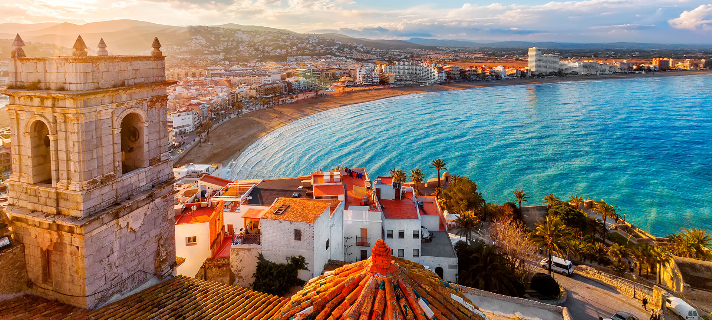

Valencia
VIDEOS
La Comunidad Valenciana es una región vibrante de España, famosa por sus playas espectaculares, su rica oferta cultural y su deliciosa gastronomía. Desde la Ciudad de las Artes y las Ciencias en Valencia hasta las playas de la Costa Blanca, la Comunidad Valenciana ofrece una experiencia única para cada visitante. La región es conocida por su paella, horchata y frescos productos del mar.
Las ciudades y pueblos de la Comunidad Valenciana, como Valencia, Alicante y Castellón, reflejan una mezcla de tradición y modernidad, con monumentos históricos, museos y una animada vida nocturna. La vida cultural valenciana es diversa, con eventos como las Fallas de Valencia y la Fiesta de la Tomatina en Buñol, que atraen a visitantes de todo el mundo.
Además, la Comunidad Valenciana ofrece numerosas oportunidades para actividades al aire libre, como el senderismo en el Parque Natural de la Sierra de Espadán, el ciclismo a lo largo de la Vía Verde del Mar y los deportes acuáticos en sus playas. Ya sea en sus animadas ciudades o en sus impresionantes paisajes naturales, la Comunidad Valenciana ofrece experiencias inolvidables para todo tipo de viajeros.